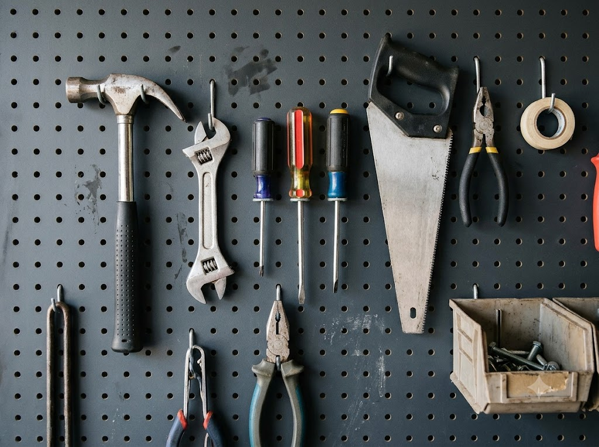
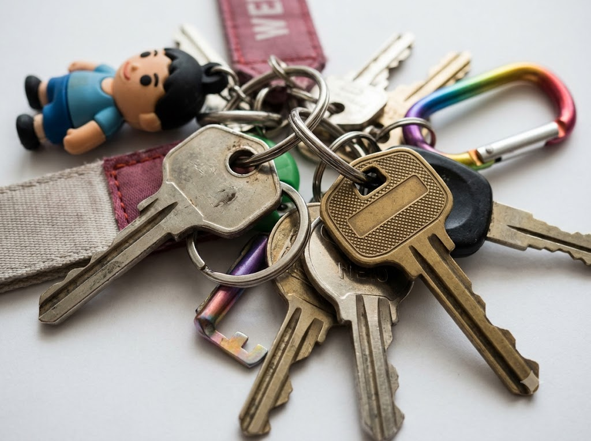
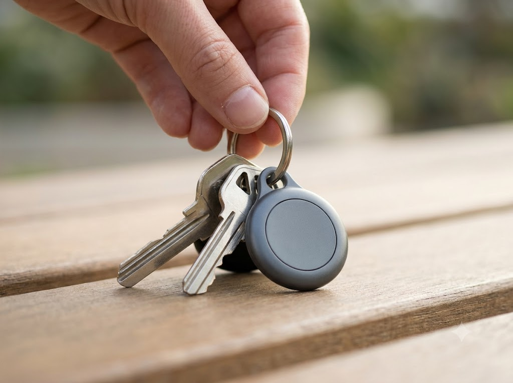
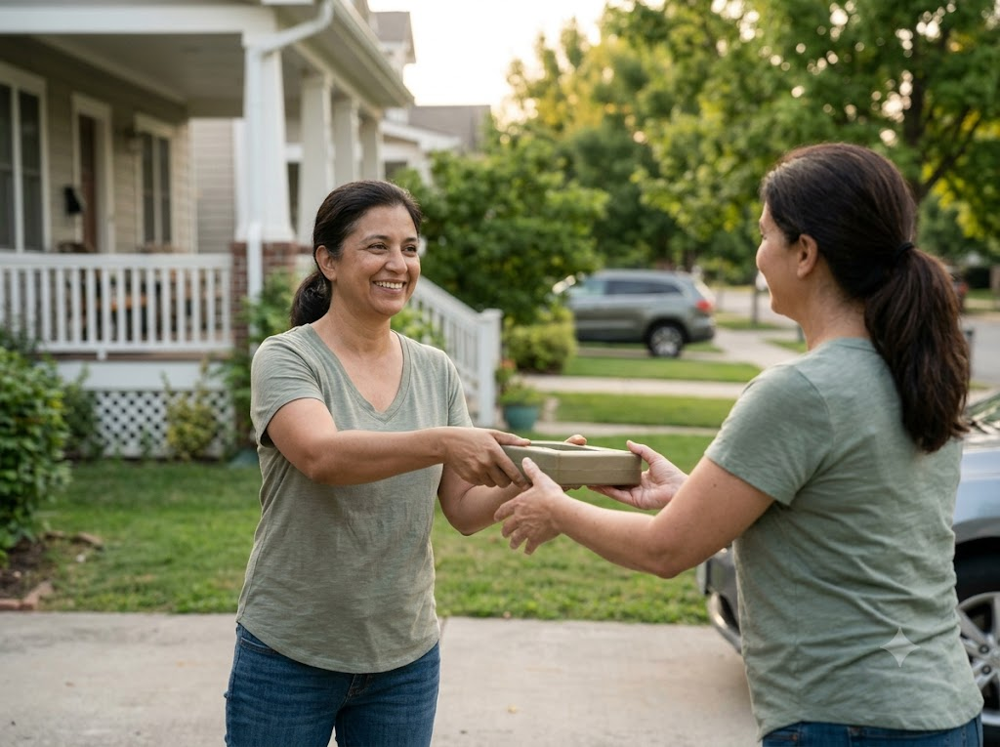

Share · Borrow · Find
Good things
go around.
Borrow useful things nearby, share what you can, and help lost items find their way home — all in one neighborhood loop.
4 simple ways to make an impact
One community, many ways to help
Four ways to make a difference.
Share
List useful things you’re happy to lend to someone nearby.
Add an item →
Borrow
Browse shared items and save a borrow request.
Browse items →
Lost
Tell the community what you lost and where you last saw it.
Report a lost item →
Found
Post an item you found and check for possible matches.
Report a found item →Neighborhood board
A little help, close to home.
Search every shared item, lost report and found post.

Three simple steps
It’s easy to loop in.
-
01
Find or post nearby
Browse shared items, or report something lost or found.
-
02
Save a request or report
Check possible Lost and Found matches, or save a borrow request.
-
03
Keep the handoff safe
Agree on pickup and return details. Keep one unique lost-item detail private.
A neighbor shares a drill. Someone borrows it for a repair, then returns it for the next neighbor.